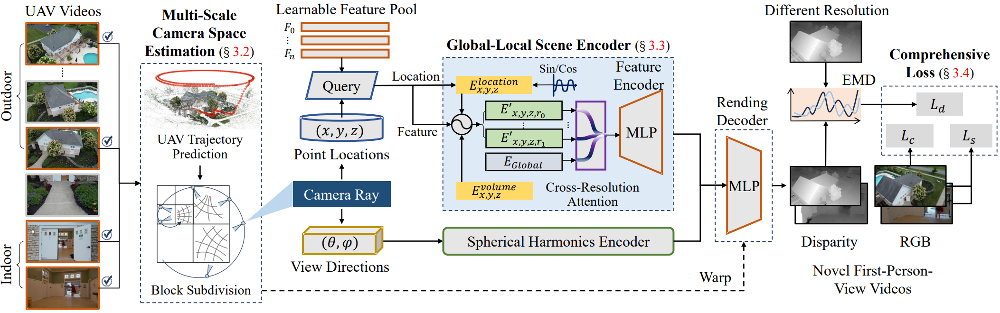
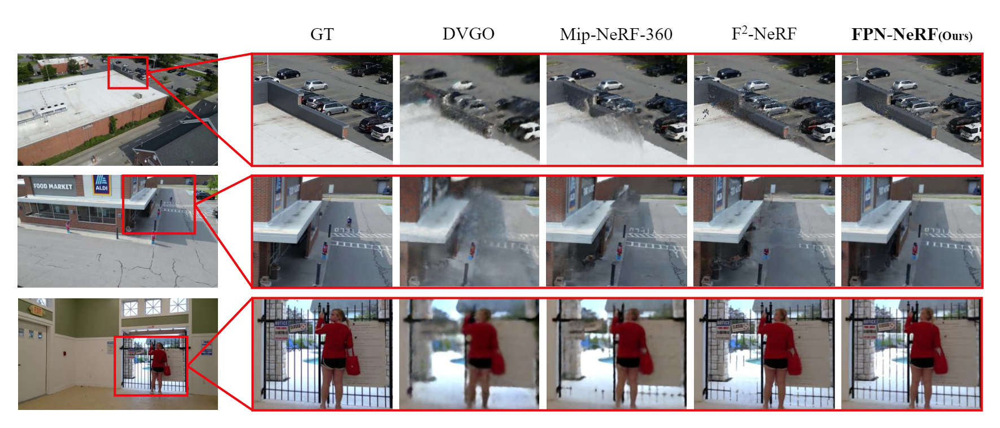
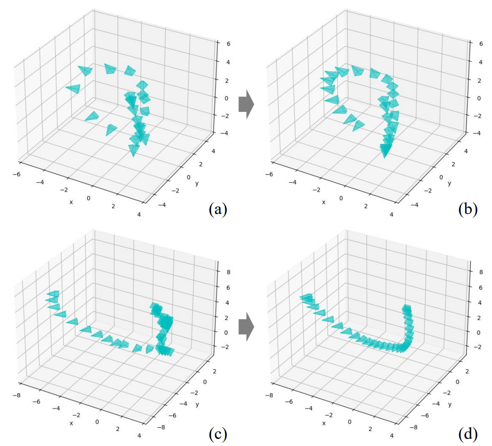

First-Person-View (FPV) holds immense potential for revolutionizing the trajectory of Unmanned Aerial Vehicles (UAVs), offering an exhilarating avenue for navigating complex building structures. Yet, traditional Neural Radiance Field (NeRF) methods face challenges such as sampling single points per iteration and requiring an extensive array of views for supervision. UAV videos exacerbate these issues with limited viewpoints and significant spatial scale variations, resulting in inadequate detail rendering across diverse scales. In response, we introduce FPV-NeRF, addressing these challenges through three key facets: (1) temporal consistency. Leveraging spatio-temporal continuity ensures seamless coherence between frames; (2) global structure. Incorporating various global features during point sampling preserves space integrity; (3) local granularity. Employing a comprehensive framework and multi-resolution supervision for multi-scale scene feature representation tackles the intricacies of UAV video spatial scales. Additionally, due to the scarcity of publicly available FPV videos, we introduce an innovative view synthesis method using NeRF to generate FPV perspectives from UAV footage, enhancing spatial perception for drones. Our novel dataset spans diverse trajectories, from outdoor to indoor environments, in the UAV domain, differing significantly from traditional NeRF scenarios. Through extensive experiments encompassing both interior and exterior building structures, FPV-NeRF demonstrates a superior understanding of the UAV flying space, outperforming state-of-the-art methods in our curated UAV dataset. Explore our project page for further insights.
Approach
FPV-NeRF embodies several appealing qualities: First, it achieves improved temporal consistency. The robust correlation timing mechanism and spatial coherence between adjacent frames in video sequences empower FPV-NeRF to construct a more continuous and smooth overall structure. Second, it enhances the integrity of the global structure. Through the thoughtful design of cross-attention between different resolutions and the acquisition of a volume feature, the training of each point's feature considers the context of surrounding points, mitigating the risk of overlooking low contextual elements. Third, it excels in providing local granularity. The subdivision of space into regions with distinct warping functions, coupled with the transformation of coordinate positions of sampling points into high-dimensional features, including high-frequency components, ensures the high-fidelity restoration of local details.

Our proposed method includes: I) Multi-scale camera space estimation, focusing on trajectory reconstruction using adjacent time frames to model environmental space. The trajectory space undergoes division, applying distinct coordinate distortion functions based on the UAV's position and pose in adjacent frames. II) First-person view video generation with a global-local scene encoder: i) a learnable volume embedding indicating general features of each block; ii) a point location embedding providing continuous features based on position, enhancing multi-scale encoding with various frequency components; iii) a level embedding offering global features for resolution rendering and cross-attention between levels. III) For training, we propose a comprehensive loss function with three terms, incorporating Optimal Transport for disparity alignment and bounded variation for smoothness consistency among neighboring regions.
Datasets
We construct a new benchmark for 3D reconstruction on UAV videos (called the UAV dataset). The UAV dataset is captured by DJI drone, contains ten unbounded scenes, including sky, grassland and a lot of buildings. Each scene is captured by a UAV, which first flies around the building in the sky, and then lands and moves into the building through the door.
Qualification results compared with previous SOTA methods on the proposed UAV dataset. the synthesized frames of DVGO is blurred due to their limited resolutions to represent such a long trajectory, the results of Mip-NeRF 360 and F2-NeRF look shaper but have local noise and distortion due to its unbalanced scene space organization. In comparison, our FPV-NeRF takes advantage of the adaptive space subdivision and considers scene features in different scale to fully exploit the global-local representation capacity.

First-Person View Trajectory
During testing, we input a novel auto-generated point position sequence into this pipeline and can finally obtain a novel first-person view video:

Conclusion
In sum, FPV-NeRF revolutionizes drone spatial perception with a novel NeRF-based approach. It conquers UAV video reconstruction challenges through multi-scale camera estimation, global-local scene encoding, and a robust learning objective. Rigorous experiments showcase FPV-NeRF's superiority, outperforming benchmarks in our carefully curated UAV dataset across diverse trajectories.